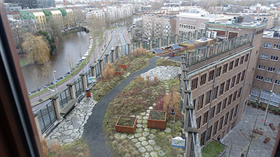

Rooftop Revolution
Het dak van het
Benno Premselahuis
Het blauw-groene dak van de Hogeschool van Amsterdam is niet alleen ecologisch, maar ook een ‘Innovatielab’ en biedt een gaaf uitzicht!
Meer infoHet blauw-groene dak van de Hogeschool van Amsterdam is niet alleen ecologisch, maar ook een ‘Innovatielab’ en biedt een gaaf uitzicht!
Meer infoDat groene daken heel tof zijn, want als je langs het gebouw loopt heb je geen idee wat er van boven allemaal te zien is. Toen ik op dit dak stond, vond ik naast alle innovaties; de zonnepanelen, beplanting - ook het uitzicht heel gaaf! Hierdoor ben ik geïnteresseerd geworden in dit soort daken. Zeker omdat Amsterdam er bewust mee bezig is om een voorloper te zijn als het gaat om duurzaamheid.